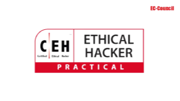

Home

Profil Prodi
Akademik

Fasilitas

Mahasiswa
Kegiatan Prodi

Sekilas Profil Program Studi
Sarjana Terapan Teknologi Rekayasa Internet akan mendapatkan materi teori dan praktek tentang elektronika umum, pengembangan aplikasi website, network security, cloud computing, mobile computing, dan Internet of Things (IoT).
Dengan dosen yang berpengalaman dalam akademik dan praktisi, maka lulusan akan memiliki kompetensi antara lain Internet Developer, Internet Network Engineer, Network Security Engineer, Cloud Computing Engineer, Mobile dan IoT Engineer, dan masih banyak lainnya.
Sarjana Terapan Teknologi Rekayasa Internet akan mendapatkan materi teori dan praktek tentang elektronika umum, pengembangan aplikasi website, network security, cloud computing, mobile computing, dan Internet of Things (IoT).
Dengan dosen yang berpengalaman dalam akademik dan praktisi, maka lulusan akan memiliki kompetensi antara lain Internet Developer, Internet Network Engineer, Network Security Engineer, Cloud Computing Engineer, Mobile dan IoT Engineer, dan masih banyak lainnya.
Kerjasama dan Sertifikasi Kompetensi
